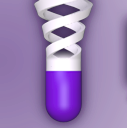
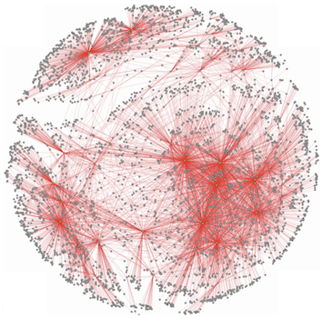

What is BioThings Explorer?
Current biological research relies significantly on the integration and cross-linking of data across multiple domains, including genes, drugs and diseases. Meanwhile, lots of data providers start to use web-based APIs as an alternative data access point. BioThings Explorer integrate different biological data together through a distributed approach, which is to interlink those individually maintained APIs for integrated knowledge exploration.
BioThings Explorer utilize the SmartAPI basd API-specific metadata and JSON-LD based semantic context to solve the API data interoperability issue. By utilizing all these technologies, we are able to build a highly connected network of biological APIs, which are discoverable, reusable and actionable. More importantly, it empowers users to perform knowledge exploration tasks by identifying potential connecting paths and chaining multiple API calls together.
You may check here for API resources currently integrated in BioThings Explorer
What can BioThings Explorer Offer?
Map
Overview of how API, endpoints and bio-entities are connected
MetaData
Get metadata information about API endpoints
Path
Find Connection between Bio-entities
Explore
Knowledge Exploration through chaining API calls
Map
BioThings Explorer takes metadata information from SmartAPI specifications, and build a highly connected network of APIs. Users may have an idea of how APIs as well as biological knowledge are connected through three different view point offered by BioThings Explorer.
The first view point, also the default one, is the semantic type view. In this scenario, all bio-entities are categorized by their semantic type, e.g. gene, variant, disease, etc. This is a high-level view of the biological information as well as their relationships contained in different APIs.
The second view point is the biological ID view. In this scenario, we show the relationship between all biological entities enclosed in our network
Users may enlarge the graph to view the detailed relationship information between different biological entities.
Users may also hover your mouse on any of the edge to view which API endpoint connects these two biological entities.
The third view point is the API level view. In this scenario, we cluster biological IDs together based on the APIs which use these IDs as inputs or outputs
Users may enlarge the graph to view the detailed information about the a specific API.
Metadata
BioThings Explorer feeds on OpenAPI specifications stored at SmartAPI.info, which includes metadata information of the input and output of individual API endpoint.
Users may select any API endpoint of their interest at 'Explore individual Endpoint'.
Once an API endpoint is selected, a Sankey plot would be displayed on the right side of the window to show the input and ouptut information of the API endpoint
On the left side of the Sankey plot is all the inputs accepted by the chosen API endpoint; and on the right side of the Sankey plot is all the possible outputs provided by the chosen API endpoint.
Path
Users may explore which API endpoints could connect from or to a specific biological entity, e.g. ncbigene at 'Explore individual Biological Entity as Input' or 'Explore Individual Biological Entity as Ouptut.
You may first select any biological entity of your interest
Once an API endpoint is selected, a Sankey plot would be displayed on the right side of the window to show which API endpoint(s) could be connected from or to this bio-entity. The example below shows all API endpoints which could be connected from Uniprot.
Explore
This part is designed to help users uncover implicit relationship between two biological IDs. Graph theory algorithms are used here to help users identify potential paths (e.g. API endpoints) connecting two biological IDs.
Users may first specify the input ID and output ID they would like to explore.
Users may also specify the maximum number of APIs used in the path. By default, it is set to be 3, which means at most 3 APIs will be used to construct one path connecting from input to output
Once you finish chosing input, output and max_api, you may click 'FIND PATH' button below. And a Sankey plot would be constructed for you on the right side of the window, showing all paths which could be connected from your input to your output.
The example above shows all paths connecting from ncbigene ID to drugname.
Below the Sankey plot, there will also be another section which list all these paths
Users may then chose any path they desire on the left side of the window, and specify the input value.
Here we select path 11, which is the path connecting from ncbigene -> mygene.info -> hgnc.symbol -> dgidb -> drugname. The input value we specified here is 1018, which correspond to ncbigene ID 1018. You may then click 'EXPLORE THIS PATH', and API calls will be chained together and automatically generated for you. A cytoscape network graph would be displayed on the right, showing all intermediate results as well as final results.
The graph above shows that the exploration starts from ncbigene:1018 (red dot), and it goes to hgnc.symbol:CDK3 first, and then it connects to three drugnames, which are RGB-286638, ALVOCIDIB and TG-02. The relationship between these nodes are labeled in the edges of the graph.
What API resources has been integrated in BioThings Explorer
-
MyGene.info API
link
MyGene.info aggregates gene annotation information from NCBI, Ensembl, Uniprot, NetAffy, PharmGKB, UCSC, CPDB, etc. -
MyVariant.info API
link
MyVariant.info aggregates variant annotation information from dbSNP, dbNSFP, ClinVar, CADD, COSMIC, UniProt, CIViC, CGI, etc. -
MyChem.info API
link
MyChem.info aggregates variant annotation information from ChEBI, ChEMBL, DrugBank, Drug Central, PharmGKB, PubChem, UNII, etc. -
 BioLink API
BioLink API
link
BioLink API aggregates biological information from variety of databases, covering gene, disease, pathway, genotype, investigations, etc. -

DGIdb API
link
DGIdb offer information on drug-gene interactionsfrom over thirty trusted sources, including Ensembl, Entrez, CGI, CIViC, FDA, MyCancerGenome, NCI, etc. -
Disease Ontology API
link
The Disease Ontology ntegrates disease and medical vocabularies through mapping of DO terms to MeSH, ICD, NCI’s thesaurus, SNOMED and OMIM. -
Ontology Lookup Service API
link
The Ontology Lookup Service (OLS) is a repository for biomedical ontologies that aims to provide a single point of access to the latest ontology versions. -
 Ensembl API
Ensembl API
link
The Ensembl API covers a variety of biological concepts, including variants, transcripts, sequences, phenotypes, regulation, taxonomy, ontology, etc. -
Broad PGM API
link
The Broad-PGM API provides probabilistic graphical models for gene expression data. -

HumanBase API
link
The HumanBase API provides data-driven predictions of gene expression, function, regulation and interactions in human